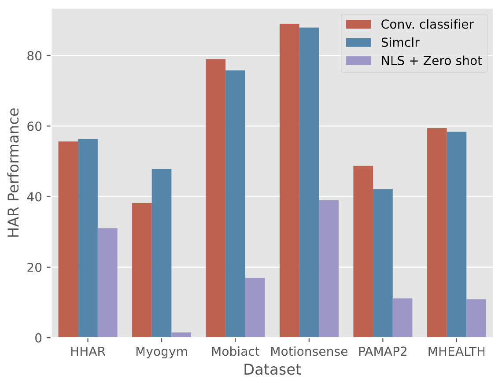
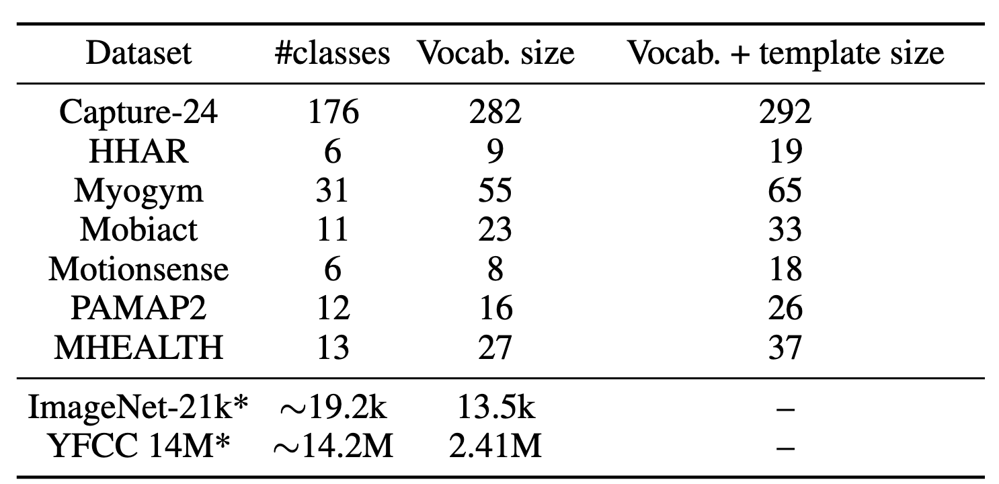
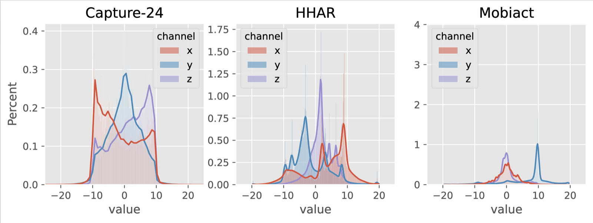
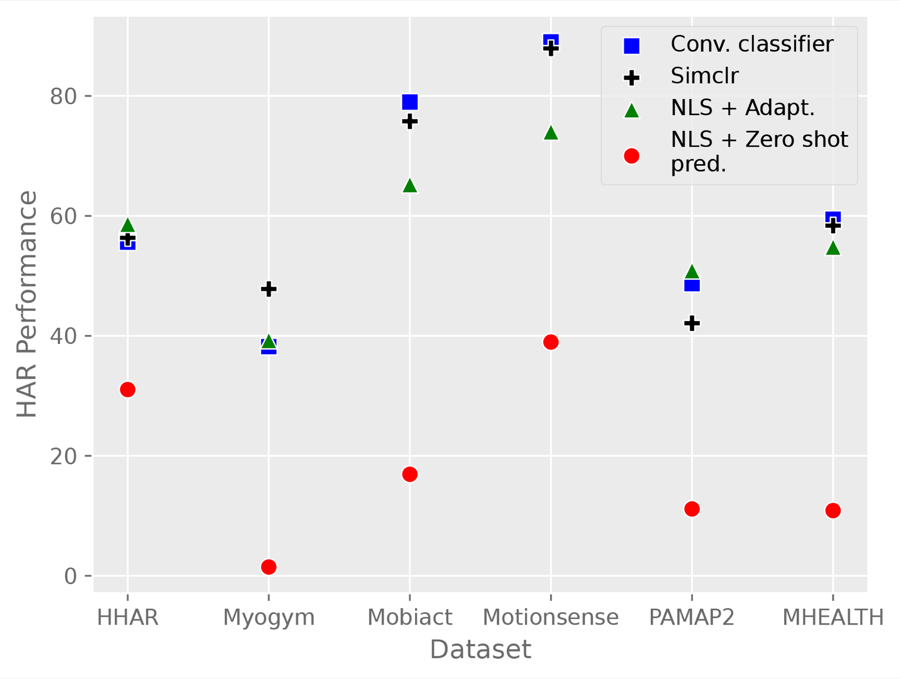
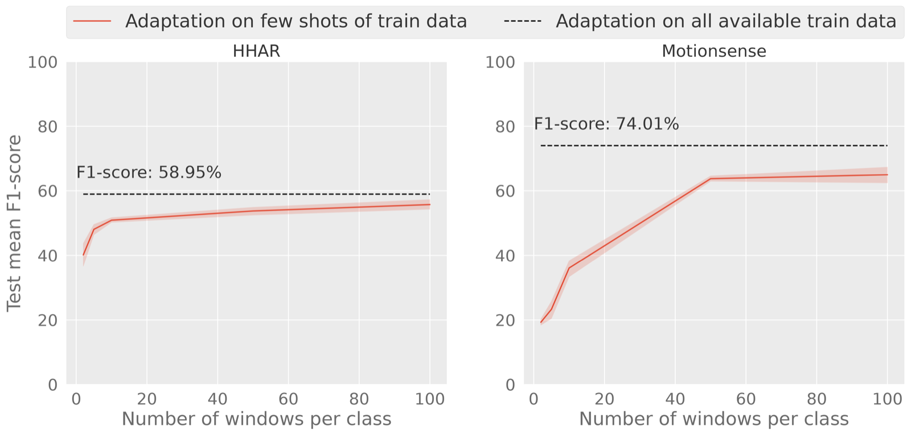
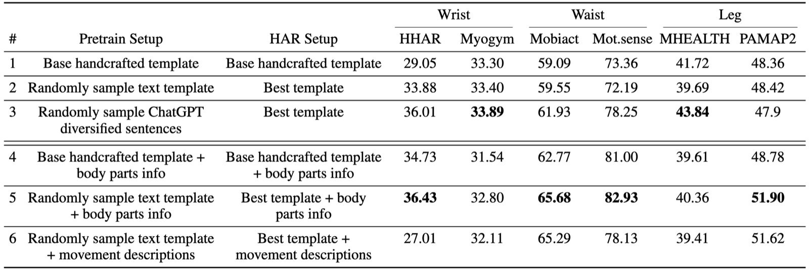

AAAIAAAI Conference on Artificial Intelligence, 2025
Natural Language Supervision for Sensor-Based HAR
Limitations in Employing Natural Language Supervision for Sensor-Based Human Activity Recognition, and Ways to Overcome Them
Abstract
Cross-modal contrastive pre-training between natural language and other modalities, e.g., vision and audio, has demonstrated astonishing performance and effectiveness across a diverse variety of tasks and domains. In this paper, we investigate whether such natural language supervision can be used for wearable sensor based Human Activity Recognition (HAR), and discover that, surprisingly, it performs substantially worse than standard end-to-end training and self-supervision. We identify the primary causes for this as: sensor heterogeneity and the lack of rich, diverse text descriptions of activities. To mitigate their impact, we also develop strategies and assess their effectiveness through an extensive experimental evaluation. These strategies lead to significant increases in activity recognition, bringing performance closer to supervised and self-supervised training, while also enabling the recognition of unseen activities and cross modal retrieval of videos. Overall, our work paves the way for better sensor-language learning, ultimately leading to the development of foundational models for HAR using wearables.
Introduction
Learning joint embedding spaces by pairing modalities with natural language descriptions of their contents (e.g., image captions or sound descriptions for audio) has proven successful across modalities. The expressiveness of natural language enables it to oversee a wider array of concepts, culminating in highly effective representations.
Despite the astonishing success of natural language supervision across modalities, domains, and applications, we discover and demonstrate in this paper that it is highly challenging to apply NLS in a plug-and-play manner to wearable sensor (accelerometer) based HAR. Following standard cross-modal setups in computer vision, we first perform pre-training on the large-scale Capture-24 dataset and perform zero shot prediction of activities on six target datasets. In the figure below, we see how the performance of self-supervised learning (SimCLR pre-training + MLP classifier) and end-to-end training (Conv. classifier) are substantially better than CLIP-style pre-training, outperforming it by around 20–50%!

We discover two major reasons for this big drop in performance:
- Sensor heterogeneity: Diversity in sensors results in significant differences in data distributions due to hardware constraints and settings such as gain, data and signal processing, differences in sampling rates, even if the sensor locations and activities are the same. This renders zero shot prediction very difficult, as pre-trained models cannot deal well with distributions causing substantial performance degradation when there is no opportunity for adaptation to (vastly) different test conditions. Figure 3 (below) visualizes the data distributions for three wearable datasets, and we observe their differences.
- Lack of rich descriptions of activities: Learning such joint embedding spaces is data intensive, relying on diverse and unique text descriptions to learn wide ranging concepts. However, many HAR datasets contain only a handful of activity labels and (in some cases) demographics information, a far cry from the 400M image-text pairs in the original CLIP paper. We summarize the number of classes and corresponding vocab. size used for pre-training in Figure 2, and observe that the vocab. size is 3–4 orders of magnitude smaller than for vision datasets like ImageNet-21K and YFCC-14M.


Tackling the challenges
We develop strategies to tackle these challenges, discussed briefly below.
Sensor heterogeneity: adapting projection layers on target data
We propose to update only the text and sensor projection heads with the target labeled data (only the train split). This is an established practice in multi-modal setups, as it enables the alignment of modalities, especially when the encoders for different modalities are already pre-trained on different datasets. Such adaptation resembles few-shot learning, where small quantities of annotated target data can vastly improve HAR.
Figure 4 shows how performance improves substantially with adaptation on the entire train split of the target data, getting closer to supervised and self-supervised learning. Figure 5 shows that as little as 4 minutes of labeled data per activity is sufficient to substantially increase HAR performance.


Lack of rich text descriptions: increasing text diversity with LLMs
We propose two measures to increase text diversity:
- Additional text templates: We employ ChatGPT to generate additional (similar) templates, so that there is variety in the templates, while retaining the same underlying meaning.
- Leveraging external knowledge about activities: Additional context about classes, obtained through external knowledge sources, potentially enables improved generalization to new concepts as they can be described using known concepts. We utilize ChatGPT as the source of external knowledge, and obtain the following information about activities: (i) body parts; and (ii) description of movements required, for performing the activities.
Figure 6 shows how the increased diversity in text descriptions and external knowledge about body parts utilized results in substantial improvements in HAR performance.

Conclusion
We explored whether natural language supervision (NLS) can be employed for zero shot prediction of activities from sensor data in the typically promised plug-and-play manner. We found that this is a very challenging endeavor and identified its two primary causes: sensor heterogeneity, and the lack of rich, diverse text descriptions of activities. Sensor heterogeneity causes HAR in diverging target conditions to be poor. To tackle this, we proposed to use small amounts of labeled target data for adaptation. To increase diversity in activity descriptions, we explored augmentation and incorporating external knowledge from pre-trained LLMs. Both strategies resulted in substantial improvements. While sensor-language modeling does not outperform state-of-the-art supervised and self-supervised training for some datasets, its additional capabilities like recognizing unseen activities, and performing cross-modal search, are clearly advantageous for real world scenarios. Our solutions result in improved sensor-language learning, paving the way for foundational models of human movements.